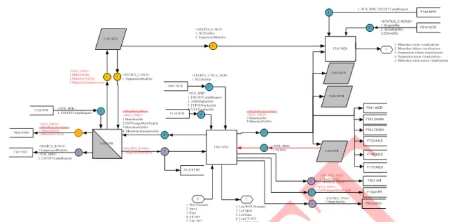
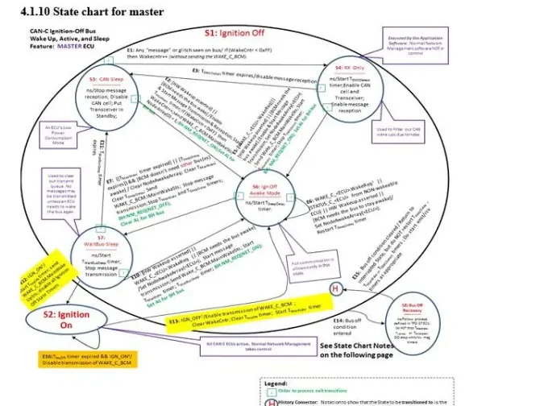

Test Cases: From Vehicle Functions to Executable Tests¶
Welcome to one of the most satisfying jobs in vehicle engineering: being the person who proves a feature actually works. A function only counts as done when someone has put it in a known condition, stimulated it, and checked the result against its specification — repeatably, on record. That someone is you, and the tool of the trade is the test case.
By the end of this article you will be able to:
- read a VF (Vehicle Function) specification — the document every requirement comes from — and know what to look for,
- turn each requirement into a positive + negative test pair with a traceable identifier,
- tell a functional test from a diagnostic one, and
- choose where each test should run: in the car, at the bench, or on a simulator.
The starting point: the Vehicle Function specification¶
Test cases are never written from thin air. They are extracted from a functional specification — in Kineton/Fiat practice, a VF (Vehicle Function). A VF is written by a functionalist and describes one vehicle function end to end: its features, the Electronic Control Units (ECUs) involved, the expected behavior under different environmental and key conditions, plus the diagnosis and recovery strategies.
Two properties matter to you as a tester:
- A VF is not tied to the component structure — it describes what the vehicle does, not how a specific ECU is built. The software itself is written starting from the VF.
- A VF is your test basis — every test case you write must trace back to a paragraph of a VF (or of a diagnostic document). No orphan tests.
A single vehicle area hosts many VFs: car access, theft protection, climate, braking, vehicle dynamics, energy management, lighting, infotainment, instrument panel functions, and more.
Naming: versions and releases¶
A VF is identified by the function name plus an alphanumeric suffix:
<Function Name>[Fx.Vfx_Rx]
- V = Version — versions the functionality according to the vehicle set-up it targets.
- R = Release — tracks changes made to the same VF across releases (for example, adaptations when porting to a new project).
Remember this suffix — it reappears inside every test case identifier, and that is exactly how traceability is enforced.
What is inside a VF¶
| Section | Content |
|---|---|
| Revision notes | Dated history: VF owner, origin project in case of porting, list of changes |
| Functional diagram | Graphical map of the nodes involved and the CAN/LIN messages they exchange for this function |
| Working conditions | When the function is operational (key-on, key-off, timed after key-off, …) |
| Function description | The heart of the VF: nodes that "make logic", their input/output signals, state machines for special conditions |
| Working characteristics | Proxy/calibration values used by the function, activation info |
| CAN WakeUP | Whether activating the function can wake the CAN network |
| Diagnosis and recovery | Fault detection and fallback behavior; details live in the CDD |

The functional diagram is the part you will read the most, so learn to scan it like a map:
- Every connection between nodes is labeled with the CAN (Controller Area Network) or LIN (Local Interconnect Network) message and the transmitted/received signals. Colors distinguish the networks (C1CAN, C2CAN, C3CAN, BHCAN, PCAN, LIN…), including private internal networks between modules of one component.
- Nodes drawn in two colors are gateways (direct or indirect) between networks.
- Numbers inside the node blocks reference other VFs the signals come from or go to — functions talk to each other through the diagram.
- Outputs are not always bus messages: an LED or a buzzer the driver hears is a perfectly legitimate function output.
Companion documents you must have open
A VF never stands alone. Before writing or running its tests, have these within reach:
- the DBC (Database CAN) files — one per CAN network, mapping every message and signal (see CAN & LIN),
- the LIN description files for the LIN sub-networks,
- the CDD (diagnostic description) — the document that meticulously lists every fault code with its validation/invalidation conditions.
A signal named differently in the VF than in the DBC — or missing from the DBC entirely — is one of the most common findings of VF analysis. Catching it early saves you a broken test later.
What a test case is¶
A test case is a set of conditions used to verify that the requirements of a function are respected — and that the implementation matches the specification. Hold on to the golden rule of coverage:
Positive and negative tests
For every operating condition, foresee both a positive test (the requirement holds when it should) and a negative test (apply the opposite condition, and the result must be the opposite of the positive case). Only the pair makes the test robust and covers all cases. One without the other is a half-finished proof.
In the V-model, your test cases sit on the right-hand (verification) side, mirroring the requirements on the left — see the V-cycle.
Test case format¶
Each test is formalized in a document (usually a table) with at least:
| Field | Meaning |
|---|---|
| Unique identifier | Alphanumeric ID, e.g. VFXXX_V5_R4.TC001 |
| Function name | The VF the test belongs to |
| Project | The vehicle project the test is written for |
| Market | Europe / Asia / America… when behavior differs per market |
| Test type | E.g. integration test or diagnostic test |
| Preconditions | Conditions that must hold before acting — fundamental for success |
| Actions | What to do, starting from the preconditions |
| Check | The expected result to verify after the actions |
| Result | OK / KO |
| Source specification | The VF (name and release) the test was extracted from |
| Notes | Free comments for the tester |
If you take one habit from this table: never skimp on the preconditions. Most "flaky" test results trace back to a system that was not actually in the state the test assumed.
The checklist table¶
In practice, all tests for a VF live in a checklist: one row per test, grouped by requirement. Its columns are:
- Req ID Reference — the paragraph number of the VF;
- Req description — the title of that paragraph;
- TEST ID —
VFXXX_VX_RY.TC001,.TC002,.TC003, …; - TEST DESCRIPTION — a verbose description written as a chain of conditions: in → key on, engine on conditions, → when condition A = true, → the expected behavior shall happen;
- CONDITION — the concrete stimulus values:
→ Key ON, Engine ON,→ CANSignal1 = xxx,→ CANSignal2 = yyy,→ ElectricalSignal1 = 'High', …; - Verification / TEST RESULT — OK or KO, plus a Note: if the test is KO, why is it KO?
That last note is not bureaucracy. A KO without an explanation is a test someone (probably you) will have to re-run from scratch.
Functional vs diagnostic test cases¶
Test cases fall into two macro categories, distinguished by the document they are checked against.
Functional (integration) test cases are the first step in guaranteeing software quality. They verify that the application works as expected technically and — just as important — that it does what the user actually asked for. They are written against the VF, and their result must match what the software specification provides.
Diagnostic test cases verify the fault-detection machinery itself. They are written against the CDD, and their result must match what the CDD provides. Their purpose is to catch malfunctions (faults) when they happen and trigger actions that minimize damage before the actual breakdown (failure) occurs. This is not optional polish: functional safety standards tie the Safety Integrity Level (SIL) of a system directly to its diagnostic coverage — the fraction of dangerous failures detected in time.
Diagnostic tests are extracted from the diagnosis section of the VF (when present) and, above all, from the CDD, which defines every DTC (Diagnostic Trouble Code) with its validation/invalidation conditions and timescales — exactly what you need to build preconditions and checks. See Diagnosis for the underlying concepts.
Deriving test cases from requirements¶
Here is the part that becomes second nature with practice. A requirement inside a VF can take many forms, and each form has its own extraction style:
- Descriptive text — e.g. "If the Master is awakened by a Hardware Wake
up that requires the CAN C bus to be awake, it shall transmit the
WAKE_C_NBC message, setting the MainWakeSts bit and the NodeX bit
corresponding to itself." This is the hardest form: you interpret the
prose, identify the precondition ("hardware wake-up requiring CAN C"), the
action (transmit
WAKE_C_NBC) and the check (MainWakeStsandNodeXbits set) — and you invent the negative case yourself. - Descriptive table — behavior listed row by row; each row becomes at least one test.
- Truth table — mechanical: every input combination is a test case.
- Logical equation — test each combination that makes the equation true and false.
- State machine — every transition is a test: put the system in the source state, apply the trigger, verify the destination state and the actions.
- Flowchart — every path through the chart is a test.
Note
Except for descriptive text, the process is deliberately straightforward: you cannot "reinterpret" a truth table or a flowchart — you follow what is written and put it in the chosen test syntax. The real skill (and the real risk of missing cases) lies in the free-text requirements.
Example: a truth table becomes four tests¶
A VF remarks section states that the "+ luci" condition is transmitted on
CAN in the InternalLightSts signal, according to this table:
PosLightCmd (+ luci) |
NightDaySts |
InternalLightSts on CAN |
|---|---|---|
| 0 (position lights OFF) | 0 (night condition) | 0 |
| 1 (position lights ON) | 0 | 1 |
| 0 | 1 (daytime condition) | 0 |
| 1 | 1 | 0 |
Each row yields a test case: set the two input signals, read the CAN signal, compare with the expected value. Notice how row 4 is the natural negative test for row 2 — same command, different ambient condition, opposite output.
Example: a state machine transition becomes a test¶
The figure below is the master state chart for CAN-C ignition-off bus wake-up/sleep management — a classic network-management requirement form:

Take transition E12, which moves the master from state S7 (WaitBusSleep) to state S2 (Ignition On). The derived test case is:
- Precondition: master ECU in S7, bus wake-up conditions as per the VF;
- Action: apply the E12 trigger (ignition on);
- Check: the ECU reaches S2 and performs the transition actions (e.g.
enabling transmission of the
WAKE_C_BCMmessage, clearing/restarting the relevant timers as written in the chart); - Negative test: without the trigger, the ECU must remain in S7 and the S2-entry actions must not occur.
One transition → one positive test plus its negative counterpart. A chart like this, with seven states and a dozen transitions, easily generates twenty or more test cases — good news for your coverage, and for your checklist.
The drafting workflow¶
Writing test cases is a process with its own quality loop, not a one-shot translation task:
flowchart TD
A["Writing / reviewing vehicle functions"] --> B["Planning"]
B --> C["Vehicle function analysis"]
C --> D["Experimentation"]
D --> E["Writing test cases"]
C -->|"points to modify on the VFs"| F["Feedback to functionalist"]
E --> G["Sending specifications to the supplier"]
D --> EThe VF analysis step is one of the most important for clean tests. It means studying the vehicle function and cross-checking it against the DB files (DBC/LIN), previously executed test results and related documentation. Typical findings:
- a signal is named differently in the VF than in the DBC — or is missing from the DBC entirely;
- parts of the function are implemented through internal messages that are not observable from the vehicle networks — they cannot be tested with an integration approach.
That second finding draws an important boundary: requirements describing behavior internal to a component, which cannot be monitored from outside, give rise to component tests — and those belong to the component's supplier, not to the vehicle-level test team. The flip side: if during analysis you spot plausible cases the VF never wrote down, you still write the corresponding test cases. Total coverage of the VF is the goal.
Worked example: Gearbox Status Management (BEV)¶
Time to see all of this on a real VF: Gearbox Status Management for a Battery Electric Vehicle (BEV) project. The function involves several nodes:
- MTA — the robotic transmission actuator, the node that "makes logic";
- SLU — the shift lever unit, source of
ShiftLeverPosition.Info(R-N-D); - BCM — body controller, acting as direct gateway routing the
STATUS_C_TCM_MTA_DCTMmessage between C-CAN and B-CAN, and mapping signals such asSTATUS_B_CAN2.SBR1RowDriverSeatSts = STATUS_SDM.SBR1RowDriverSeatSts; - IPC — the instrument panel, which displays indications and drives the buzzer based on what it receives on B-CAN.
Requirements are written in a semi-formal style: a @ condition
(@KeyStatus.info = keyon:) followed by shall statements in if/else form.
Train your eye here: each shall is a test seed.
Mismatch: blinking and buzzer¶
The VF defines a mismatch table between the inserted gear and the
transmission park brake status (TPBMSts), separately for
Keyon_EngineOff and Keyon_EngineOn — e.g. lever in N with park brake
not released → mismatch. From it:
- when the MTA detects a mismatch for longer than the timeout
T_Gear_Mismatch(trial value 500 ms), it shall sendSTATUS_C_TCM_MTA_DCTM.GearIndicationSts = BlinkingandBuzzerReqSts = OtherCaseSoundOn; - when no mismatch is detected, it shall send
GearIndicationSts = NormalandBuzzerReqSts = OFF.
That is a positive test (create the mismatch, wait out the timeout, read the CAN signals: blinking + buzzer on) and a negative test (no mismatch: signals stay Normal/OFF). Every row of both mismatch tables is its own test case.
Gear engagement requests¶
The N/R/D engagement requirements show how one shall branches into several
tests. For an R engagement request at Keyon_EngineOn, coming from N:
- brake pedal pressed and
VehicleSpeed.Info < Rthreshold(trial value 3 km/h) → MTA inserts R; - brake not pressed → MTA sends
RoboticTransmissionWarnings = Press_Brake_Pedal_Repeat_WarningforTmessage(trial value 10 s) and forces N; - speed too high →
Vehicle_Speed_Too_High_to_Shift_RforTmessage, force N; if the speed then drops belowRthresholdwhile the lever is still in R, the MTA shall stop the warning and insert R.
Three tests minimum from one paragraph — plus the recovery path as a fourth.
The symmetrical requirement exists for D engagement with
Forwardthreshold (trial value −3 km/h): rolling backward faster than
the threshold blocks the D engagement and raises
Vehicle_Speed_Too_High_to_Shift_D.
Drive mode: a small state machine¶
The Power/Eco button cycles three modes in a fixed sequence, with Normal
as the predominant mode at every startup:
stateDiagram-v2
[*] --> Normal: startup (predominant mode)
Normal --> EcoPower: button press (after Tdebounce)
EcoPower --> PowerEco: button press (after Tdebounce)
PowerEco --> EcoPower: button press (after Tdebounce)At startup the MTA sends DriveModeSts = No_program_Selected; each press
(after Tdebounce, trial value 60 ms) advances the mode and updates
DriveModeSts accordingly. Tests: the full cycle, the startup default, the
key-off behavior (during T_SHOW_OFF_MTA, 8 s, the MTA must still send
No_program_Selected), and the debounce filtering itself.
Diagnosis: missing messages¶
The VF's diagnosis table assigns each fault a type (electrical,
plausibility, missing message), the node that stores it and its detection
time. Example: if the MTA does not receive STATUS_B_CAN for at least
MissingMsg_Default_Time (trial value 2.5 s), it shall validate the DTC
and assume a safe default — DriverDoorSts = Closed. When the message is
received correctly again, the DTC is devalidated and real values are used.
The IPC and BCM have analogous requirements for their input messages.
The diagnostic test case writes itself: stop the message (easy on a simulator or bench), wait 2.5 s, check the DTC is validated and the default is used; restart the message, check devalidation. The exact validation/invalidation timings come from the CDD.
Configuration parameters: the tester's cheat sheet¶
The VF closes with a table of calibrable parameters and their first trial values — these are the concrete numbers to use in your preconditions and checks:
| Parameter | Meaning | Trial value |
|---|---|---|
Rthreshold |
Speed threshold to accept Reverse | 3 km/h |
Forwardthreshold |
Speed threshold to accept Drive | −3 km/h |
T_Gear_Mismatch |
Time before mismatch is recognized | 500 ms |
Tmessage |
Time a warning message is driven to the IPC | 10 s |
Tdebounce |
Button debounce/filter time | 60 ms |
TStuck |
Time to detect a stuck drive-mode button | 20 s |
T_SHOW_OFF_MTA |
CAN update guaranteed after key-off | 8 s |
T_SHOW_OFF_IPC |
Indication guaranteed after key-off | 7 s |
MissingMsg_Default_Time |
Time to declare a message missing | 2.5 s |
TPBM_threshold |
Speed threshold to request the park brake | 4 km/h |
MTA_CRC_MC_wrong_timer |
Time to recognize CRC/message-counter errors | 3 s |
Trial values are calibrations, not constants
These are first trial values: a later calibration release can change
them. Always read the parameters from the VF release quoted in your test
ID (VFXXX_V5_R4…) before writing timing checks — a test written
against 500 ms will fail confusingly the day the calibration moves to
something else.
Where tests are executed¶
Once the tests for a VF are written, the test phase can run in three environments, chosen per test type:
| Environment | When to prefer it |
|---|---|
| In the car | When you must observe the real, user-perceivable behavior — e.g. wiper behavior at high vehicle speed |
| At the bench | When you need to simulate/measure the electrical-electronic behavior — currents, voltages, oscilloscope work |
| At the simulator | When no car or bench is available, or when you need CAN message stimulation with very fast dynamics |
Missing-message diagnostic tests and timing checks around hundreds of milliseconds are natural simulator candidates; the buzzer you must hear is a car test.
Key takeaways
- You can extract test cases from the VF (functional tests) and the CDD (diagnostic tests) — never write them freehand.
- Every requirement deserves a positive and a negative test; the pair is what makes your coverage robust.
- Test IDs embed the VF name, version and release
(
VFXXX_V5_R4.TC001) — that is your traceability chain. - Requirements come as text, tables, truth tables, equations, state machines and flowcharts; each form maps mechanically to tests — only free text needs real interpretation, and that is where your judgment grows.
- VF analysis against the DBC catches wrong/missing signal names before they break your tests; unobservable internal behavior becomes a component test, owned by the supplier.
- The VF's parameter table (
T_Gear_Mismatch,MissingMsg_Default_Time, thresholds…) hands you the concrete numbers for your checks — just always test against the quoted release. - You can pick the right environment per test: car for user-perceivable behavior, bench for electrical measurement, simulator for fast CAN stimulation.
Where this leads
You will manage the requirements behind these tests in Requirements, dig deeper into the VF documents in Vehicle Functions, and automate execution on HIL (Hardware-in-the-Loop) rigs in HIL Users.
Source material¶
This article was distilled from the academy lesson materials:
- Checklist — PDF, 31.2 KB
- Functional Specification — PDF, 722.6 KB
- Procedure for drafting Test Cases — PDF, 608.4 KB
- Test cases creation — PDF, 392.3 KB
- VFxxx — PDF, 379.8 KB